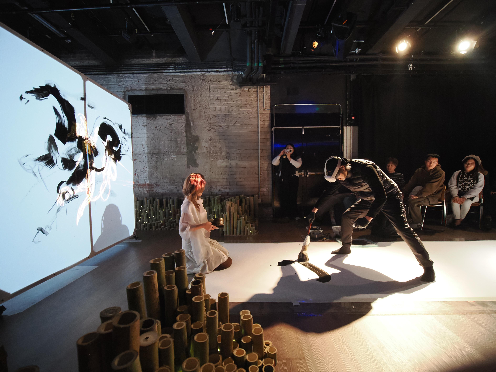
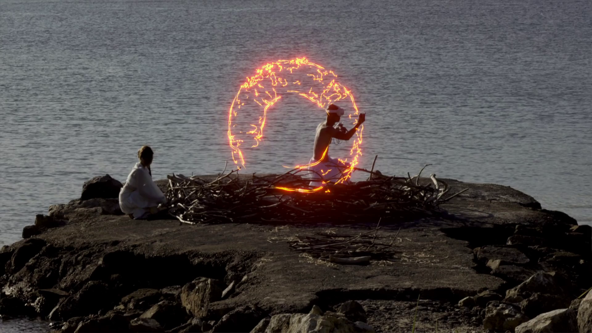
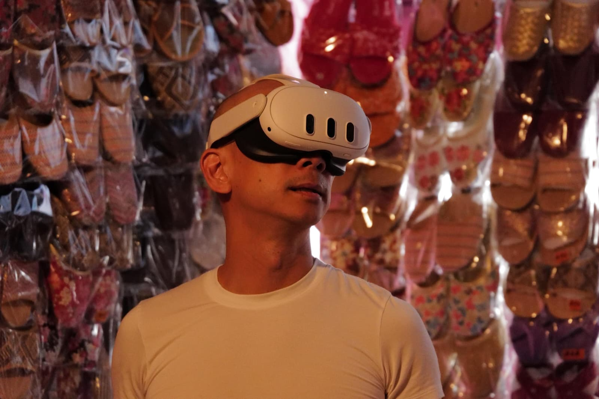
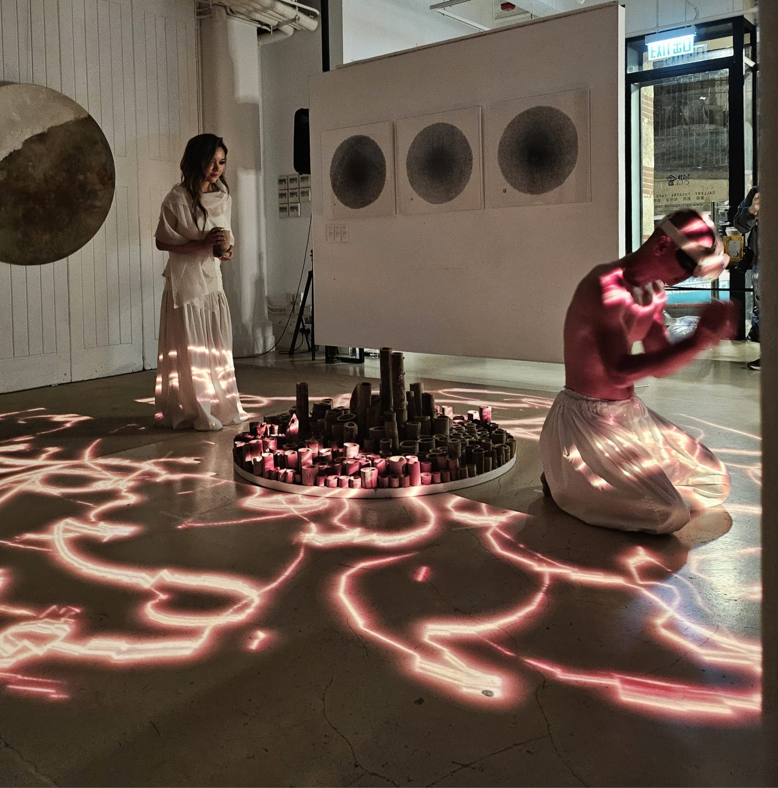
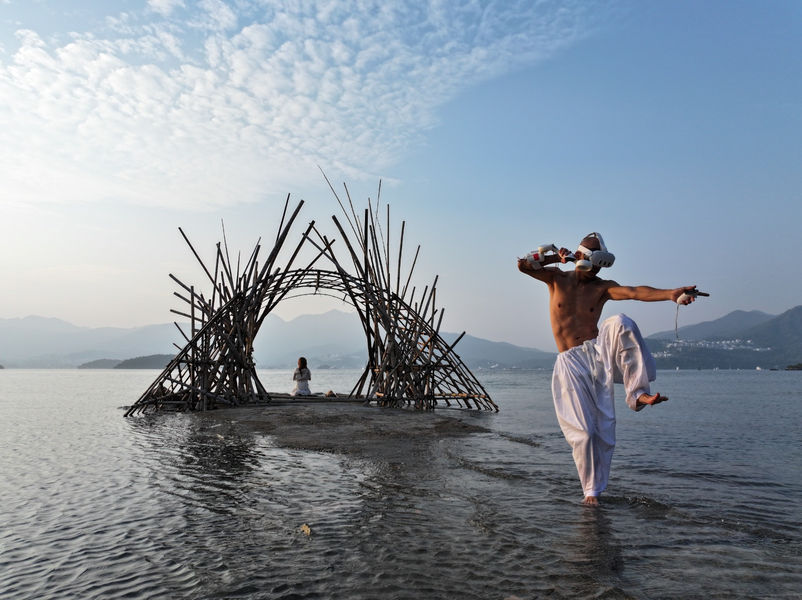
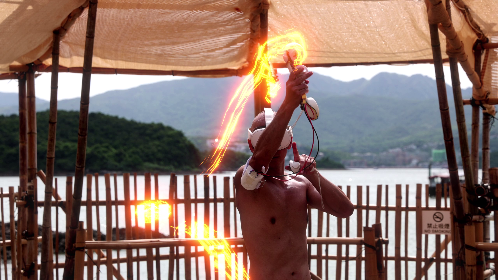

(Formerly 「X-ARt」)
Man, Nature, Technology, Art
About artrio
Using augmented reality technologies, we metaphorically reveal the ‘fields of force’ and ‘flows of materials’ of Nature, to arouse a greater appreciation of Nature and its invisible forces that affect every aspect of our lives.
Our work is a blend of site-specific installations, performance art, and technological experimentation, always aiming to bridge the gap between the digital and the natural world.
Until December 2025, artrio was operating under the name 「X-ARt」.
Image Gallery

EQUUS: Form + Void (Jan 2026)

TTY2.2: Gates and Tides of Change (Oct 2025)

Come, Stay, Linger, Time (May 2025)

Nature: Consciousness + Being (Jan 2025)

TTY2: Through the Years, To Touch You (Nov 2024 - Jan 2025)

Experimentations at Yim Tin Tsai Ecorotunda (Jul 2024)

Experimentations at Sharp Island Beach (Apr 2023)

Nature: Metaphysics and Metaphor (Dec 2023)
Featured Projects

Performances & Experimentations
-
UntitledKat O Dajiao Art Festival, Kat O, HK
-
EQUUS: FORM + VOIDFringe Festival, Fringe Club, Central, HKProject Page(2 performances)
-
EQUUS: FORM + VOIDFringe Festival, Fringe Club, Central, HKProject Page
-
TTY2 2.0: Gates and Tides of ChangeYim Tin Tsai Performing Arts Festival, Yim Tin Tsai, HKProject Page
-
CSLT: Come, Stay, Linger, TimeTsung Lun Shoe Company, Kowloon City, HKDemo
-
N:C+B: Nature: Consciousness + BeingArt Fringe, Fringe Club, Central, HK
-
TTY2: Through the Years, To Touch YouSai Kung Hoi Arts Festival, Yim Tin Tsai, HKProject Page(2 performances)
-
N:C+B: Nature: Consciousness + BeingFringe Festival, Fringe Club, Central, HK
-
TTY2: Through the Years, To Touch YouSai Kung Hoi Arts Festival, Yim Tin Tsai, HKProject Page(3 performances)
-
TTY2: Through the Years, To Touch YouSai Kung Hoi Arts Festival, Yim Tin Tsai, HKProject Page
-
UntitledThe Altitude, Gaia Hotel Bandung, Yogjakarta, Indonesia
-
UntitledBorobodur, Panambaran, Yogjakarta, Indonesia
-
TTY2: PreludeYim Tin Tsai Old Pier, HKProject Page
-
UntitledTew Falls, Hamilton, Ontario, Canada
-
UntitledNordlingen Woods, Markham, Ontario, Canada
-
UntitledSharp Island beach, HK
-
N:M+M: Nature: Metaphysics + MetaphorShaw Auditorium, HKUST, HK
-
N:M+M: Nature: Metaphysics + MetaphorHeath, Tsim Sha Tsui, HK
Engagement
-
UntitledHKUST, Clearwater Bay, Hong Kong
-
TTY2: Through the Years, To Touch YouSai Kung Hoi Arts Festival, Yim Tin Tsai, HK(3 workshops)
Technical Team
- LEUNG Cho Kiu Anya
- CHAN Ho Ching Carson
- Kirill SHATILOV
- WU Chun Ming Jimmy
- WU Zhen
- YONG Vi Jun Sean
- ZHUO Yuchao